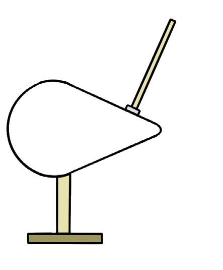
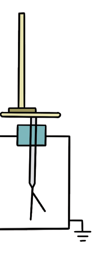
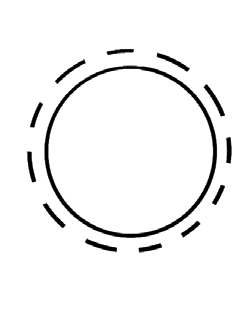
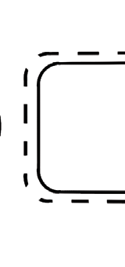
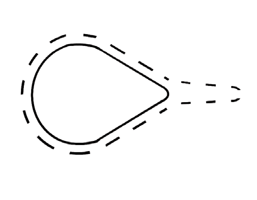
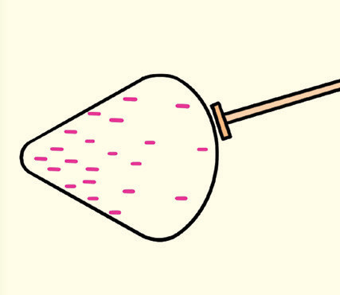
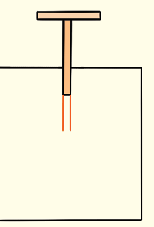

Charge distribution on a conductor
Induced charge resides on the surface of a conductor.
Conductors appear in many different shapes, such as spherical, pear-shaped and cylindrical surfaces.
Charge distribution on conductors depends on the shape of the conductor.
Charge distribution on the surface of a conductor
The distribution of charges on a conductor depends on the shape of the conductor.
A proof plane and a gold-leaf electroscope can be employed to investigate this phenomenon.
This is accomplished by successively pressing the proof plane against various regions of the surface of a conductor and then transferring the collected charge to the electroscope.
The extent to which the leaves of the electroscope diverge provides a rough estimate of the amount of charge that has been transferred within a certain region, which, in turn, offers insight into the surface charge density of the conductor, as shown in Figure 1.41.



Spherical
Cylindrical
Pear shapedFigure 1.41: Testing charge distribution according to the shape of the conductor
The charge density of charged conductors of various shapes, such as spherical, cylindrical, and pear-shaped, can be tested.
To examine the charge distribution on a conductor, carry out Activity 1.11.
Aim:
To examine the distribution of charge through various conductorsMaterials:
proof plane, leaf electroscope, aluminium foil, various conductors

Pear-shaped conductorProof plane
Gold leaf electroscopeFigure 1.42
(pear, spherical, cylindrical and conical conductors
Procedure
1. Charge a pear-shaped conductor.
2. Using a proof plane, touch the flat side of the conductor